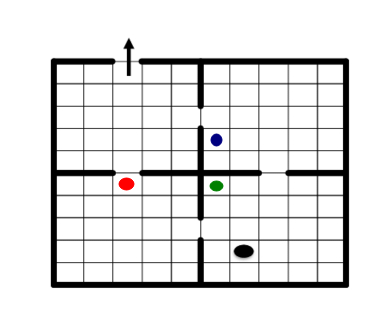

MDP Example 31
Description
In this example we modelize the famous Stochastic Shortest Path: four rooms. A detailled presentation can be seen in the chapter Hierarchical reinforcement learning of Hengst in the book Reinforcement learning state of the art with editors: M. Wiering and M. Otterlo.
The MDP can be represented by
{kind=link}

Mathematical description
Here wa add a supplementary lines. Once we reach any element of line 10 we infinitely remain in this state.
Hence:
The state space is a box of eleven lines and ten columns ([0,10]x[0,9]).
The action space is of size four (0 means UP, 1 means DOWN, 2 means LEFT, 3 means RIGHT).
Any move cost 1 except the move from state (9,2) to (10,2) that costs -1. Any move in states (10,.) cost 0.
In each state wa have a probability of 0.9 to follows the action and 0.1 to remain in the same space.
Specificity
A major advantage of this example lies in the fact have a several dimensions state space that we manage with dedicated object of marmoteCore here we use a MarmoteBox.
Tasks performed:
Multidimensional sets
We use here a two dimensional set MarmoteBox which is an herited class of MarmoteSet. It allows to manage multidimensional set and to get the index of any state.
Code
We built a state space with a MarmoteBox object. This requires to build an array with the size of each dimension and then build the object with two parameters: the dimension and the array of sizes.
/* create the state space as a marmoteBox */
/* definitions of the size of the two dimensions: dimension 1 is 11 and dimension 2 is 10 */
stateType dims[2]={11,10};
/* create the box*/
MarmoteBox *stateSpace = new MarmoteBox(2,dims);
To handle MarmoteBox one should use a buffer. This is detailled below
/*Allocate buffers (to be used to manage the state) */
MarmoteState statebufferO = stateSpace->StateBuffer();
/* defining the state to (9,2) */
statebufferO[0]=9;
statebufferO[1]=2;
/* Getting the index of the state (9,2) */
indexO=stateSpace->Index(statebufferO);
/* defining the entry of the cost matrix with action UP to -2 */
CostMat->setEntry(indexO,0,-2.0);
/* obtaining the state associated to index 50 and putting in statebuffer */
stateSpace->DecodeState(50, statebufferO);
We write the solution with respect a given dimension. In the code below dimension 1 varies for each value a diemnsion 0. This gives a line by line writing. To do that we should cast the type of the policy returned by value iteration to have a FeedbackSolutionMDP. Then we write the policy with repsect to a given dimension with WriteSolutionByDim.
/* to get FeedbackPolicy properties we should make a cast */
FeedbackSolutionMDP * policy;
if ( dynamic_cast <FeedbackSolutionMDP *> (optimum2) != NULL ){
policy = dynamic_cast <FeedbackSolutionMDP *> (optimum2);
}
/* Now policy is of FeedbackSolutionMDP type */
cout<<"Print solution by dimension (line by line)"<< endl;
optimum2->WriteSolutionByDim(1,stateSpace);
We path the whole state space with the methods stateSpace->FirstState()
/* statebufferO is in initial state */
stateSpace->FirstState(statebufferO);
/* path */
for(k=0; k<stateSpace->Cardinal();k++){
/* getting the index of the state */
indexO = stateSpace->Index(statebufferO);
/* the different values of the states are in the array statebufferO */
l=statebufferO[0]; /* getting value of the first dimension of the box */
c=statebufferO[1]; /* getting value of the second dimension of the box */
/* writing the row and the column */
cout<< "--line=" << l << " --column=" << c;
/* getting the values and the action at the index of the state */
cout<< " --Optimal action=" << policy->getActionIndex(indexO) << " --Optimal Value=" << policy->getValueIndex(indexO) <<endl;
/* Move to next state */
stateSpace->NextState(statebufferO);
}
Download
The source file is here
Output
A (partial) output is here